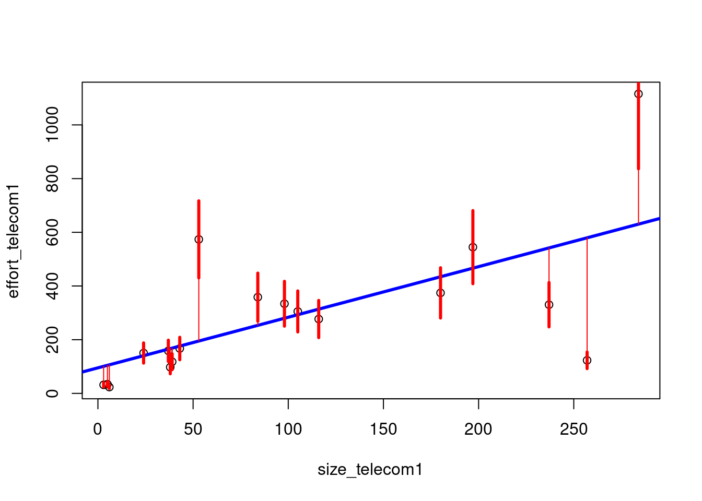
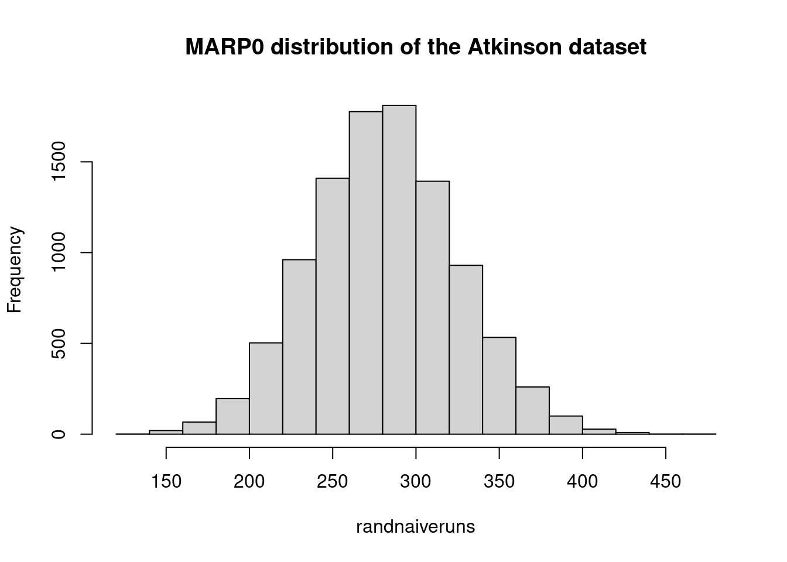

Chapter 3 Measures of Evaluation in Software Engineering
3.1 Effort estimation evaluation metrics
There are several measures typically used in software engineering. In particular for effort estimation, the following metrics are extensively used in addition or instead of statistical measures.
Mean of the Absolute Error (MAR): compute the absolute errors and take the mean
Geometric Mean of the Absolute Error (gMAR): more appropriate when the distribution is skewed
Mean Magnitude of the Relative Error (MMRE): this measure has been critisized many times as a biased measure (\(\frac{\sum_{i=1}^{n}{|{\hat{y}_i-y_i}|}/y_i}{n}\))
Median Magnitude of the Relative Error (MdMRE): using the median instead of the mean
Level of Prediction (\(Pred(l)\)) defined as the percentage of estimates that are within the percentage level \(l\) of the actual values. The level of prediction is typically set at 25% below and above the actual value and an estimation method is considered good if it gives a result of more than 75%.
Standardised Accuracy (SA) (proposed by Shepperd and MacDonnell): this measure overcomes all the problems of the MMRE. It is defined as the MAR relative to random guessing (\(SA=1-{\frac{MAR}{\overline{MAR}_{P_0}}\times100}\))
Random guessing: \(\overline{MAR}_{P_0}\) is defined as: predict a \(\hat{y}_t\) for the target case t by randomly sampling (with equal probability) over all the remaining n-1 cases and take \(\hat{y}_t=y_r\) where \(r\) is drawn randomly from \(1\) to \(n\) and \(r\neq t\).
Exact \(\overline{MAR}_{P_0}\): it is an improvement over \(\overline{MAR}_{P_0}\). For small datasets the “random guessing” can be computed exactly by iterating over all data points.
3.2 Evaluation of the Model in the Testing data
library(foreign)
gm_mean = function(x, na.rm=TRUE){
exp(sum(log(x[x > 0]), na.rm=na.rm) / length(x))}
chinaTrain <- read.arff("./datasets/effortEstimation/china3AttSelectedAFPTrain.arff")
logchina_size <- log(chinaTrain$AFP)
logchina_effort <- log(chinaTrain$Effort)
linmodel_logchina_train <- lm(logchina_effort ~ logchina_size)
chinaTest <- read.arff("./datasets/effortEstimation/china3AttSelectedAFPTest.arff")
b0 <- linmodel_logchina_train$coefficients[1]
b1 <- linmodel_logchina_train$coefficients[2]
china_size_test <- chinaTest$AFP
actualEffort <- chinaTest$Effort
# predEffort <- exp(b0+b1*log(china_size_test)) wr
predEffort <- exp(b0)*china_size_test^b1
err <- actualEffort - predEffort #error or residual
ae <- abs(err)
hist(ae, main="Absolute Error in the China Test data")
mar <- mean(ae)
mre <- ae/actualEffort
mmre <- mean(mre)
mdmre <- median(mre)
gmar <- gm_mean(ae)
mar## [1] 1867mmre## [1] 1.15mdmre## [1] 0.551gmar## [1] 833level_pred <- 0.25 #below and above (both)
lowpred <- actualEffort*(1-level_pred)
uppred <- actualEffort*(1+level_pred)
pred <- predEffort <= uppred & predEffort >= lowpred #pred is a vector with logical values
Lpred <- sum(pred)/length(pred)
Lpred## [1] 0.1863.3 Building a Linear Model on the Telecom1 dataset
- Although there are few data points we split the file into Train (2/3) and Test (1/3)
telecom1 <- read.table("./datasets/effortEstimation/Telecom1.csv", sep=",",header=TRUE, stringsAsFactors=FALSE, dec = ".") #read data
samplesize <- floor(0.66*nrow(telecom1))
set.seed(012) # to make the partition reproducible
train_idx <- sample(seq_len(nrow(telecom1)), size = samplesize)
telecom1_train <- telecom1[train_idx, ]
telecom1_test <- telecom1[-train_idx, ]
par(mfrow=c(1,1))
# transformation of variables to log-log
xtrain <- log(telecom1_train$size)
ytrain <- log(telecom1_train$effort)
lmtelecom1 <- lm( ytrain ~ xtrain)
plot(xtrain, ytrain)
abline(lmtelecom1, lwd=2, col="blue")
b0_tel1 <- lmtelecom1$coefficients[1]
b1_tel1 <- lmtelecom1$coefficients[2]
# calculate residuals and predicted values
res <- signif(residuals(lmtelecom1), 5)
xtest <- telecom1_test$size
ytest <- telecom1_test$effort
# pre_tel1 <- exp(b0_tel1+b1_tel1*log(xtest))
pre_tel1 <- exp(b0_tel1)*xtest^b1_tel1
# plot distances between points and the regression line
plot(xtest, ytest)
curve(exp(b0_tel1+b1_tel1*log(x)), from=0, to=300, add=TRUE, col="blue", lwd=2)
segments(xtest, ytest, xtest, pre_tel1, col="red")
3.4 Building a Linear Model on the Telecom1 dataset with all observations
- Just to visualize results
par(mfrow=c(1,1))
effort_telecom1 <- telecom1$effort
size_telecom1 <- telecom1$size
lmtelecom <- lm(effort_telecom1 ~ size_telecom1)
plot(size_telecom1, effort_telecom1)
abline(lmtelecom, lwd=3, col="blue")
# calculate residuals and predicted values
res <- signif(residuals(lmtelecom), 5)
predicted <- predict(lmtelecom)
# plot distances between points and the regression line
segments(size_telecom1, effort_telecom1, size_telecom1, predicted, col="red")
level_pred <- 0.25 #below and above (both)
lowpred <- effort_telecom1*(1-level_pred)
uppred <- effort_telecom1*(1+level_pred)
predict_inrange <- predicted <= uppred & predicted >= lowpred #pred is a vector with logical values
Lpred <- sum(predict_inrange)/length(predict_inrange)
Lpred## [1] 0.444#Visually plot lpred
segments(size_telecom1, lowpred, size_telecom1, uppred, col="red", lwd=3)
err_telecom1 <- abs(effort_telecom1 - predicted)
mar_tel1 <- mean(err_telecom1)
mar_tel1## [1] 1253.5 Standardised Accuracy Examples
3.5.1 Standardised Accuracy MARP0 using the China Test dataset
- Computing \(MARP_0\) in the China Test data
estimEffChinaTest <- predEffort # This will be overwritten, no problem
numruns <- 9999
randguessruns <- rep(0, numruns)
for (i in 1:numruns) {
for (j in 1:length(estimEffChinaTest)) {
estimEffChinaTest[j] <- sample(actualEffort[-j],1)}#replacement with random guessingt
randguessruns[i] <- mean(abs(estimEffChinaTest-actualEffort))
}
marp0Chinatest <- mean(randguessruns)
marp0Chinatest## [1] 3949hist(randguessruns, main="MARP0 distribution of the China dataset")
saChina = (1- mar/marp0Chinatest)*100
saChina## [1] 52.73.5.2 Standardised Accuracy. MARP0 using the Telecom1 dataset
- Computing \(MARP_0\)
telecom1 <- read.table("./datasets/effortEstimation/Telecom1.csv", sep=",",header=TRUE, stringsAsFactors=FALSE, dec = ".") #read data
#par(mfrow=c(1,2))
#size <- telecom1[1]$size not needed now
actualEffTelecom1 <- telecom1[2]$effort
estimEffTelecom1 <- telecom1[3]$EstTotal # this will be overwritten
numruns <- 9999
randguessruns <- rep(0, numruns)
for (i in 1:numruns) {
for (j in 1:length(estimEffTelecom1)) {
estimEffTelecom1[j] <- sample(actualEffTelecom1[-j],1)}#replacement with random guessingt
randguessruns[i] <- mean(abs(estimEffTelecom1-actualEffTelecom1))
}
marp0telecom1 <- mean(randguessruns)
marp0telecom1## [1] 271hist(randguessruns, main="MARP0 distribution of the Telecom1 dataset")
saTelecom1 <- (1- mar_tel1/marp0telecom1)*100
saTelecom1## [1] 53.93.5.3 Standard Accuracy MARP0 using the Atkinson Dataset
- For checking results you may use figure Atkinson in Shepperd & MacDonnell
## [1] 281
3.6 Exact MARP0
Langdon et al(2016) provide a solution to calculate Shepperd and MacDonell’s \(MAR\)_{P_0}$ exactly. An R code implementation is as follows.
#example dataset
atkinson_actual_effort <-
c(670,912,218,595,267,344,229,190,869,109,289,616,557,416,578,438)
myabs <- function(x,y) abs(x-y)
#diffs is square array whose i,jth element = abs(actual_i - actual_j)
#in practice this is good enough but could be made more efficient by not
#explicitly storing the matrix and only using the values below the diagonal.
diffs <- outer(atkinson_actual_effort,atkinson_actual_effort,myabs)
marp0 <- mean(diffs)
marp0## [1] 264#### same procedure without using the outer function
act_effort <-
c(670,912,218,595,267,344,229,190,869,109,289,616,557,416,578,438)
n <- length(act_effort)
diffs_guess <- matrix(nrow=n, ncol=n)
colnames(diffs_guess) <- act_effort
rownames(diffs_guess) <- act_effort
for (i in 1:n){
diffs_guess[i,] <- act_effort - act_effort[i]
}
diffs_guess <- abs(diffs_guess)
means_per_point <- apply(diffs_guess, 2, mean)
marp0 <- mean(means_per_point)
marp0## [1] 2643.7 Computing the bootstraped confidence interval of the mean for the Test observations of the China dataset:
library(boot)##
## Attaching package: 'boot'## The following object is masked from 'package:survival':
##
## aml## The following object is masked from 'package:lattice':
##
## melanoma## The following object is masked from 'package:sm':
##
## dogshist(ae, main="Absolute Errors of the China Test data")
level_confidence <- 0.95
repetitionsboot <- 9999
samplemean <- function(x, d){return(mean(x[d]))}
b_mean <- boot(ae, samplemean, R=repetitionsboot)
confint_mean_China <- boot.ci(b_mean)## Warning in boot.ci(b_mean): bootstrap variances needed for studentized intervalsconfint_mean_China## BOOTSTRAP CONFIDENCE INTERVAL CALCULATIONS
## Based on 9999 bootstrap replicates
##
## CALL :
## boot.ci(boot.out = b_mean)
##
## Intervals :
## Level Normal Basic
## 95% (1420, 2316 ) (1386, 2284 )
##
## Level Percentile BCa
## 95% (1450, 2348 ) (1496, 2419 )
## Calculations and Intervals on Original Scale- Computing the bootstraped geometric mean
boot_geom_mean <- function(error_vec){
log_error <- log(error_vec[error_vec > 0])
log_error <-log_error[is.finite(log_error)] #remove the -Inf value before calculating the mean, just in case
samplemean <- function(x, d){return(mean(x[d]))}
b <- boot(log_error, samplemean, R=repetitionsboot) # with package boot
# this is a boot for the logs
return(b)
}
# BCAconfidence interval for the geometric mean
BCAciboot4geommean <- function(b){
conf_int <- boot.ci(b, conf=level_confidence, type="bca")$bca #following 10.9 of Ugarte et al.'s book
conf_int[5] <- exp(conf_int[5]) # the boot was computed with log. Now take the measure back to its previous units
conf_int[4] <- exp(conf_int[4])
return (conf_int)
}
# this is a boot object
b_gm <- boot_geom_mean(ae) #"ae" is the absolute error in the China Test data
print(paste0("Geometric Mean of the China Test data: ", round(exp(b_gm$t0), digits=3)))## [1] "Geometric Mean of the China Test data: 832.55"b_ci_gm <- BCAciboot4geommean(b_gm)
print(paste0("Confidence Interval: ", round(b_ci_gm[4], digits=3), " - ", round(b_ci_gm[5], digits=3)))## [1] "Confidence Interval: 679.439 - 1016.691"# Make a % confidence interval bca
# BCAciboot <- function(b){
# conf_int <- boot.ci(b, conf=level_confidence, type="bca")$bca #following 10.9 of Ugarte et al.'s book
# return (conf_int)
# }3.8 Defect prediction evaluation metrics
In addition to the machine learning metrics for classification, Jiang et al. provide a survey (Jiang, Cukic, and Ma 2008).